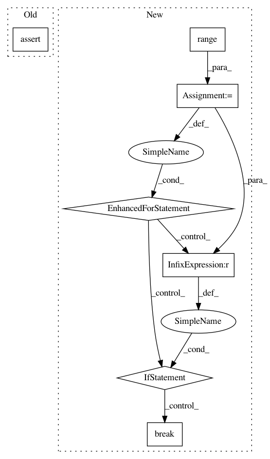

f2248a7b41dc0ab56486a5e9cab35afda227a4e9,nisl/decomposition/tests/test_canica.py,,test_canica_square_img,#,7
Before Change
// can change from computer to computer, and break the test.
assert_array_equal(np.abs(maps[0]) > np.abs(maps[0]).max() * 0.95,
component2.ravel() != 0)
assert_array_equal(np.abs(maps[2]) > np.abs(maps[2]).max() * 0.95,
component3.ravel() != 0)
assert_array_equal(np.abs(maps[1]) > np.abs(maps[1]).max() * 0.95,
component1.ravel() != 0)
assert_array_equal(np.abs(maps[3]) > np.abs(maps[3]).max() * 0.95,
component4.ravel() != 0)
After Change
// Find pairs of matching components
indices = range(4)
for i in range(4):
map = np.abs(maps[i]) > np.abs(maps[i]).max() * 0.95
for j in indices:
ref_map = components[j].ravel() != 0
if np.all(map == ref_map):
indices.remove(j)
break;
else:
assert False, "Non matching component"
if __name__ == "__main__":
test_canica_square_img()
In pattern: SUPERPATTERN
Frequency: 3
Non-data size: 7
Instances
Project Name: nilearn/nilearn
Commit Name: f2248a7b41dc0ab56486a5e9cab35afda227a4e9
Time: 2013-03-12
Author: abraham.alexandre@gmail.com
File Name: nisl/decomposition/tests/test_canica.py
Class Name:
Method Name: test_canica_square_img
Project Name: tensorflow/agents
Commit Name: 9a3e9d21273da7ae40da9f70cb6df1b077b08105
Time: 2019-12-05
Author: kbanoop@google.com
File Name: tf_agents/networks/actor_distribution_network_test.py
Class Name: ActorDistributionNetworkTest
Method Name: testDropoutFCLayersWithConv
Project Name: calico/basenji
Commit Name: 4bd519216069fbfe70205adf9bfbc6bb48c4bcf5
Time: 2018-08-27
Author: drk@calicolabs.com
File Name: bin/basenji_train2.py
Class Name:
Method Name: make_data_ops